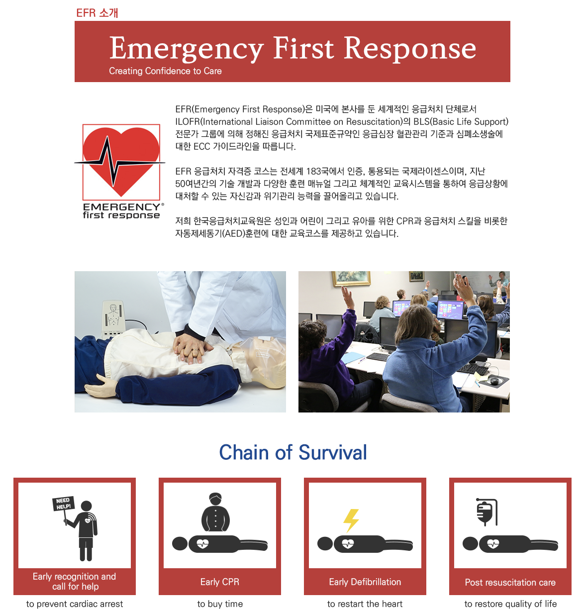

EFR(Emergency First Response)란?
국제표준규약 기준의 가이드라인에 따른 공신력 있는 미국의 심폐소생술협회입니다. 저희학원에 입학하신 후 취득이 가능합니다.
Emergency First Response CPR & AED 교육은 심장과 관련된 생명을 위협하는 응급상황에 대해 배우게 됩니다.
- 첫째, CPR – 심폐소생술. CPR은 정상적인 심장박동이 없을 때에도 두뇌와 중요 기관에 산소를 제공하게 됩니다.
- 둘째, AED 사용법. AED는 자동 외부 제세동기(automated external defibrillator)를 의미하며 비정상 및 비효율적인 심장박동을 교정하게 됩니다.
- 셋째, 질식 환자를 돕는 방법을 익히게 됩니다. 이러한 정확한 심폐소생술 후에 Emergency First Response Secondary Care (First Aid)는 응급 구조대(Emergency Medical Service, EMS)의 도움이 지연되거나 구조대가 출동할 수 없는 경우에 환자를 안심시키고, 통증을 경감시키면서 추가적인 피해의 위험을 줄이는 방법을 익히게 됩니다.
